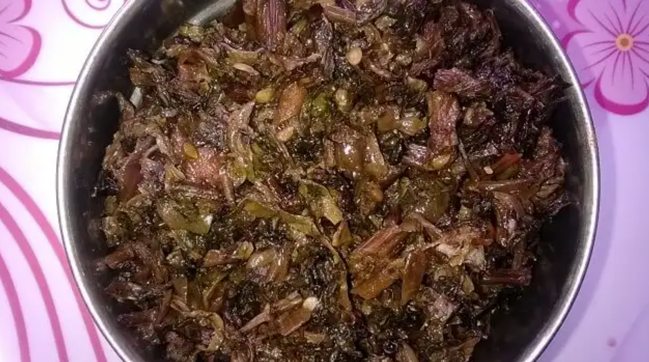
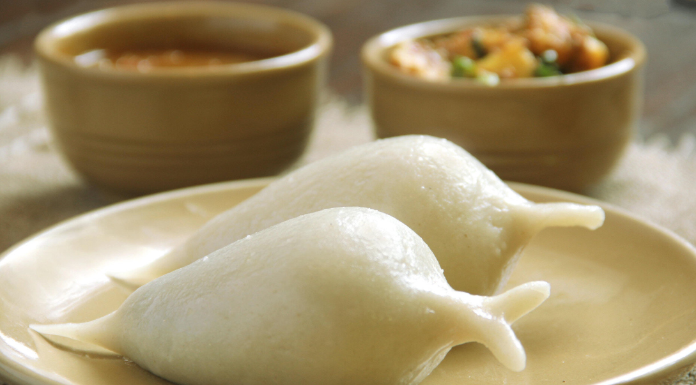

Welcome to Nepal

Location
South Asia
Nepal, officially the Federal Democratic Republic of Nepal, is a landlocked country in South Asia. It is mainly situated in the Himalayas, but also includes parts of the Indo-Gangetic Plain, bordering the Tibet Autonomous Region of China to the north, and India in the south, east, and west, while it is narrowly separated from Bangladesh by the Siliguri Corridor, and from Bhutan by the Indian state of Sikkim.
DePauw Students
Nepali students composes 1.77% student body of DePauw students
Top 2 Cuisines
Gundruk
Gundruk is regarded as the national dish of Nepal. It is an assortment of pickled green-leafy vegetables which is relished as a condiment or a side dish with the main course meal. Mustard, radish, and cauliflower are wilted for a day or two and then stored in a tight earthenware pot which allows the leaves to release acidic juices. So, it is basically a Nepali kimchi.
Yomari
Yomari is a fish-shaped winter delicacy. It is made with rice dough to fight cold weather in the mountains. Not only its peculiar shape will intrigue you, but a sweet filling is filled inside the dough which makes it hard to resist for people with sweet tooth. You can also enjoy the spicy lentil version.